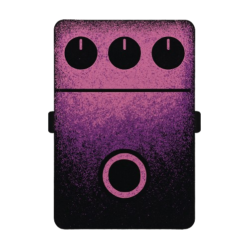

BOD

All Plugins
Contact
BOD FX69B Grunge Plugin
Download VST 3 Plugin
Grunge Pedal Simulation
Recreates the sound and look of the classic "FX69B Grunge" 1998 model pedal.
Four Powerful Controls:
Loud:
Control the overall output level.
High:
: Shape the high-frequency brightness.
Low:
Adjust the bass response for a thick or tight sound.
Grunge:
Grunge: Dial in the signature distortion and grit.
Accurate Audio Processing:
Oversampling to reduce unwanted digital artifacts keeping smooth and true to the original 1998 pedal.
Diode-style Preamp using algorithms that model the analog clipping for authentic crunch and saturation.